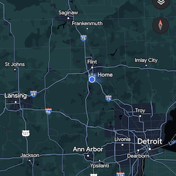

Feel free to email me or add me on links below:


I live in Grand Blanc, Michigan. Which is in the middle of farm land, but only 45 minutes from Ann Arbor, Detroit and Lansing. When I was in high school, I attended an in depth Graphic Design class for two years. Afterwards, I had a Certification of Graphic Design. I then went and graduated from the College for Creative Studies. After my graduation with a Bachelor of Fine Arts, I fell into a career being a commercial and residential painter. After fifteen years in the trades, I had to make a change. The one career that seemed to make the most sense for me and my family was in web development.
I have always had a passion for art and design, but over the years found myself intrigued by problem solving. There’s a humungous sense of accomplishment whenever I figured out a solution. I feel that software engineering and development is the combination of all of these elements.
In my person life, I enjoy as much time as possible with my family. My wife,two children and I love to go on hikes and vacation in a tent in the middle of the woods. With the right career, we may just live out an RV as we travel the country side.


Feel free to email me or add me on links below: